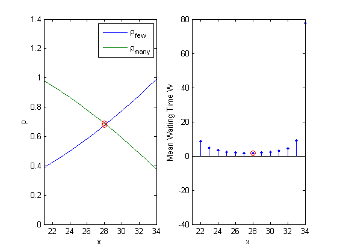

Chapter 3, Problem 29
clear
Dmax = 40;
lambda = 1;
x = 1:Dmax;
p = x/Dmax;
mu_few = 15./((1+x)/2);
T2_few = (1 + x).*(1 + 2*x)/6/15^2;
lambda_few = p*lambda;
rho_few = lambda_few./mu_few;
W_few = lambda_few.*T2_few/2./(1-rho_few);
mu_many = 15./((x+1 + Dmax)/2);
T2_many = (1 + 3*Dmax + 2*Dmax^2 + 3*x + 2*Dmax*x + 2*x.^2)/6/15^2;
lambda_many = (1-p)*lambda;
rho_many = lambda_many./mu_many;
W_many = lambda_many.*T2_many/2./(1-rho_many);
W = p.*W_few+(1-p).*W_many;
xmin = x(W==min(W(W>0)))
subplot(121)
plot(x,rho_few,x,rho_many)
xlabel('x')
ylabel('\rho')
legend('\rho_{few}','\rho_{many}')
old_axis = axis;
axis([21 34 old_axis(3:4)])
hold on
plot(xmin,rho_few(xmin),'ro',xmin,rho_many(xmin),'ro')
hold off
subplot(122)
stem(x,W,'.')
xlabel('x')
ylabel('Mean Waiting Time W')
old_axis = axis;
axis([21 34 old_axis(3:4)])
hold on
stem(xmin,W(xmin),'r')
hold off
xmin =
28
